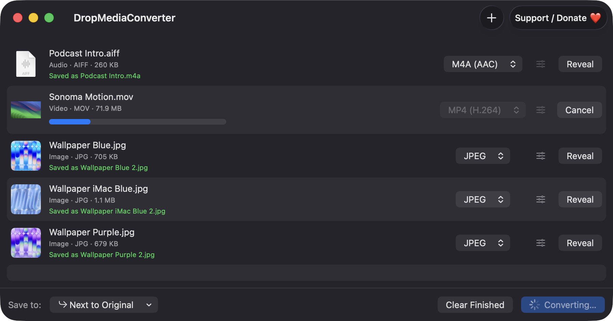
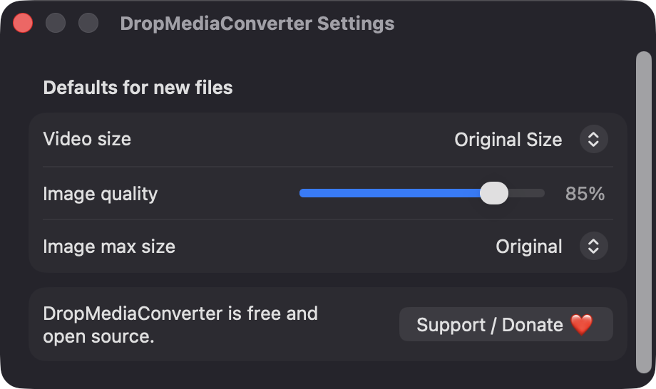
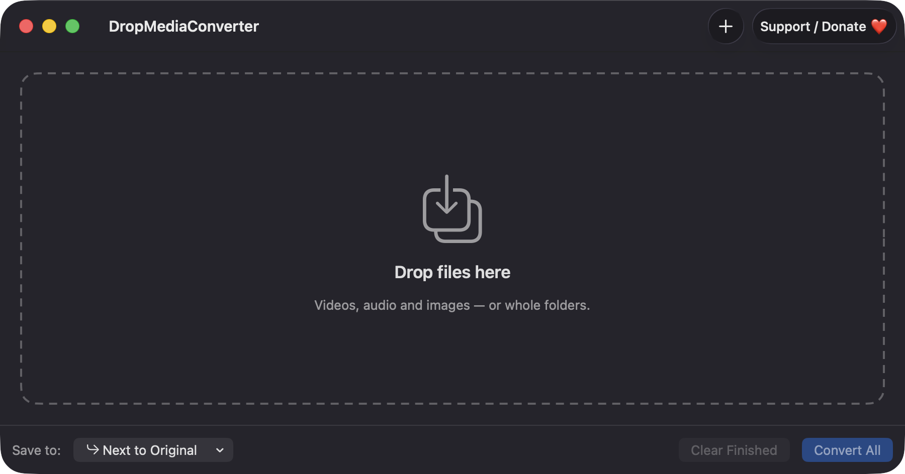

Drop files or whole folders
Drag in any number of files, drop them on the Dock icon, or use Add Files (⌘O). Folders are expanded to the regular files inside.
Open source · macOS 14+ · Universal binary · Files & Conversion
Drag videos, audio, images or whole folders onto the window, pick a format for each, and press Convert All (⌘↩). Everything runs locally on your Mac.
Free & MIT licensed · Apple Silicon & Intel · Latest release

Features
Built on AVFoundation and ImageIO, so there are no command-line tools to install and nothing leaves your Mac.
Drag in any number of files, drop them on the Dock icon, or use Add Files (⌘O). Folders are expanded to the regular files inside.
Video to MP4 (H.264), MP4 (HEVC) or MOV. Audio to M4A, WAV or AIFF. Images to JPEG, PNG, HEIC or TIFF.
Choose 1080p, 720p or Original Size for video, and a quality slider and maximum dimension for images. Set defaults in Preferences.
Up to two conversions run at once, each with its own progress bar and Cancel button. Reveal in Finder appears when a row is done.
Output goes next to the original or into a folder you choose. If a name is taken, a counter is added, like name 2.mp4. Cancelled or failed jobs leave no partial file.
Videos with an audio track can be exported straight to M4A, WAV or AIFF. Files without audio are reported clearly instead of failing silently.
Screenshots


Install
DropMediaConverter is open source and not notarized with a paid Apple Developer ID, so macOS needs one extra step the first time.
xattr -cr /Applications/DropMediaConverter.app
Download
Free, forever. Built for macOS 14 Sonoma or newer, Apple Silicon and Intel.
Not notarized: on first launch right-click DropMediaConverter.app → Open.
FAQ
Yes. It is released under the MIT license, and the full source is in the GitHub repository. There are no ads, accounts or paid tiers. If it saves you time, an optional Support button links to Ko-fi.
No. It does not ask for Accessibility, Screen Recording or Microphone access. It only reads the files you drop or pick, and writes output next to them or in the folder you choose. macOS may show its usual prompt for protected folders.
Your files stay where they are, and converted copies are saved next to the originals or in your chosen folder. The app makes no network calls and has no analytics. Only your default settings are saved in standard macOS preferences.
Notarization requires a paid Apple Developer account, and this is a free project. Right-click the app and choose Open once to get past Gatekeeper, or build it yourself from source with Xcode and XcodeGen.
Yes. DropMediaConverter was generated by Claude Code from a written spec as a clean-room reimplementation, with no code or assets from any commercial app. The full source is on GitHub under MIT, so you can read every line before you run it. It has had less human review than a hand-written app, so bug reports are welcome.
Support ❤️
DropMediaConverter is a free, open-source alternative to paid utilities. If it earns a spot on your Mac, a coffee keeps the updates coming.
☕ Support Or on Ko-fi